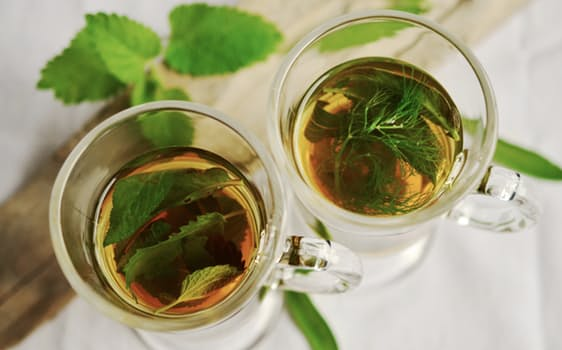
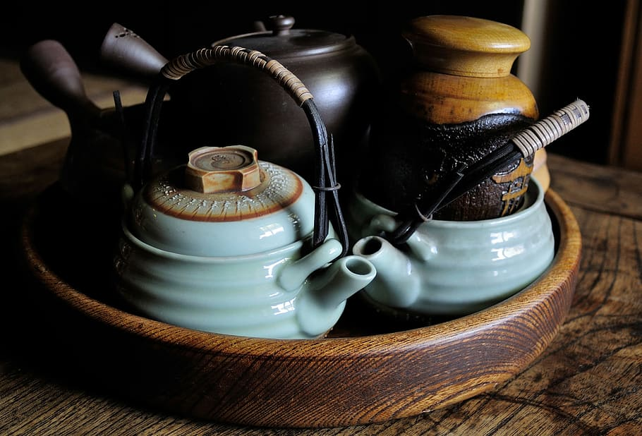
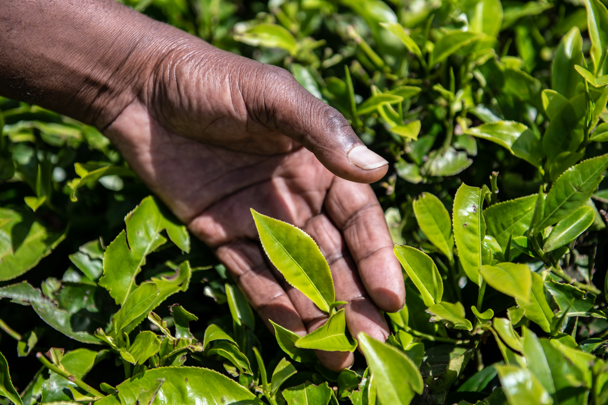
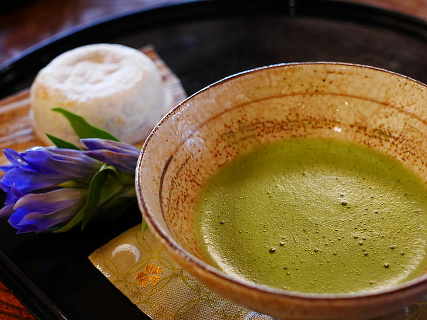

What is the most expensive type of tea?
Oolong. The priciest tea in the world can be found in China and often goes under the name of "Tieguanyin", selling at nearly $1,500 per pound!

What plant do tea leaves come from?
Camellia Sinensis. All teas come from the same plant besides herbal infusions.

Which tea is the most oxidized?
Black tea has the longest oxidation period. White tea is the least.

What health benefits can tea have?
Many! Tea is known to help with sleep and reduced inflamation, digestion, stress relief, and more.